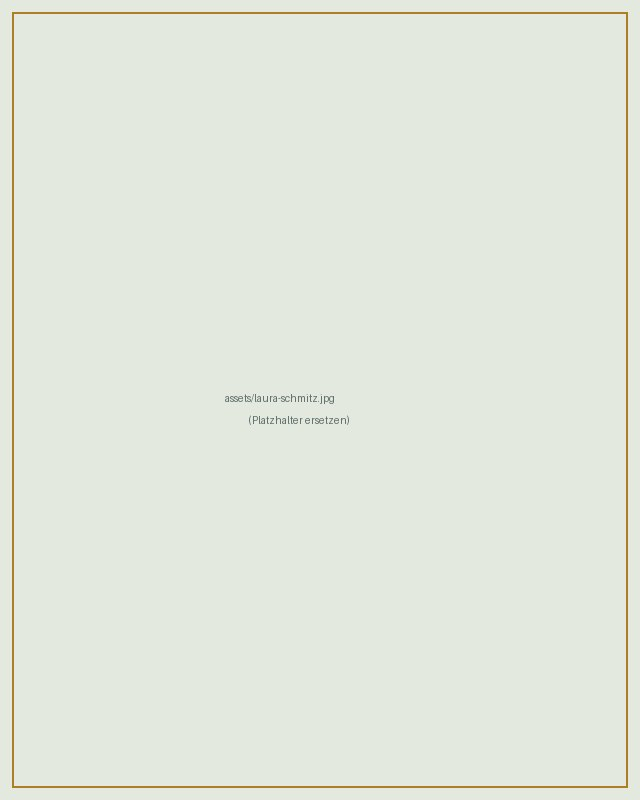

Laura Schmitz
Postdoctoral researcher in economics
I work at the interface of social and environmental policy. My research asks how environmental conditions and policies — air pollution, driving restrictions, heat, carbon pricing — shape health, human capital and inequality, and who carries the cost of the green transition.
Before my PhD I worked for the International Labour Organization on social protection and employment policy.
I am currently on part-time parental leave (Elternteilzeit).

Research
Publications and forthcoming
-
From low emission zone to academic track: Environmental policy effects on educational achievement in elementary school
-
Heterogeneous effects of after-school care on child development
-
Socioeconomic differences in private school attendance: How much does the geographical distribution of private schools explain?
Under review
-
Understanding the link between heat and intimate partner violence
-
Information, justice and public support for carbon tax-and-benefit policies: Evidence from Germany
Working papers
-
Globalized consumption undermines efficiency-driven sustainability gains across planetary boundaries
-
Low depression zones? The effect of driving restrictions on air pollution and mental health
Before the PhD
-
The IMF and the social dimension of growth: A content analysis of recent Article IV surveillance reports
Policy work
-
Familiale, individuelle und institutionelle Einflussfaktoren auf Bildungsungleichheiten
Media and commentary
-
Lasst Kinder und Eltern wählen!
-
Lernlücken fürs Leben
Contact
Post
DIW Berlin
Anton-Wilhelm-Amo-Straße 58
10117 Berlin, Germany